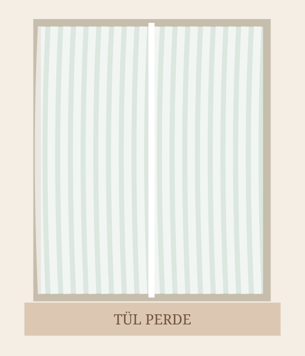

KOLEKSİYONLARIMIZ
Tül Perdeler
Ölçüye özel dikilen tül perde modellerimizi inceleyin.
Ürünler yükleniyor…

ÖLÇÜYE ÖZEL TÜL PERDE
Tül Perde
Doğal doku ve zarif bir görünüm.
Kumaş Metre Fiyatı—
Toplam Fiyat—
Fiyat, seçilen pileye göre kullanılan kumaş metresinden hesaplanır.
☀ Işık Geçirgen♧ Özel Dikim✧ Şık Görünüm
Ölçü Alma
Perdenin bitmiş enini ve boyunu santimetre cinsinden giriniz. Ölçüler tam sayı olmalıdır.
Dikim ve Montaj
Korniş düğmeli veya rustik/halkalı dikim seçeneklerinden birini seçiniz.
Bakım ve Temizlik
Ürünün kumaş türüne göre bakım talimatlarına uyunuz.